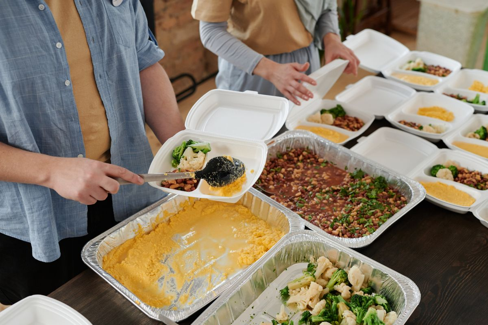

Food
Food donations are part of the mission’s planned support. Accepted items and delivery arrangements will be confirmed before collections begin.
SUPPORT THE MISSION
Help build a foundation for practical support and a more hopeful next chapter.
Food donations are part of the mission’s planned support. Accepted items and delivery arrangements will be confirmed before collections begin.
New clothing can meet an essential need with dignity. Needed sizes, items, and collection details will be shared when available.
Monetary giving is planned to help the mission grow. Online donations will open once payment arrangements are confirmed.
GIVING WITH PURPOSE
We are preparing the details so supporters know how and where to give. Please wait for confirmed arrangements before sending items or money.
Giving inquiries ↗Online donations are not open yet.
